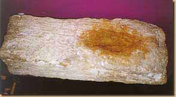
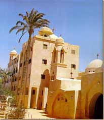
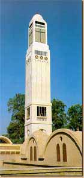
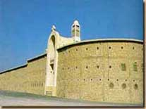
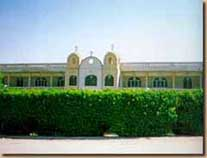
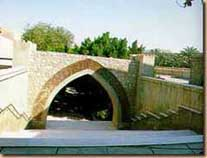
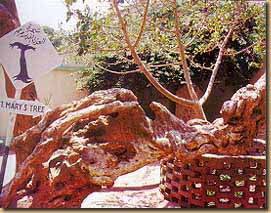

وقد ظهر قدم السيد المسيح على حجر ، ومنه أخذت المدينة اسمها بالقبطية ، وقد أخفى هذا الحجر زمناً طويلاً خوفاً من سرقته في بعض العصور - واكتشف هذا الحجر ثانية من حوالي 13 عاماً فقط . وإذا كانت العائلة المقدسة قد سلكت الطريق الطبيعي أثناء سيرها من ناحية سمنود إلى مدينة سخا ، فلابد أنها تكون قد مرت على كثير من البلاد التابعة لمحافظة الغربية وكفر الشيخ ، ويقول البعض أنها عبرت في طريقها في براري بلقاس .
حجاب الهيكل بكنيسة السيدة العذراء - سخا
أثار قدم السيد المسيح على حجر
ومن مدينة سخا عبرت العائلة المقدسة نهر النيل (فرع رشيد ) الى غرب الدلتا وتحركت جنوباً الى وادى النطرون ( الاسقيط ) وقد بارك السيد المسيح وامه العذراء هذا المكان
دير الأنبا بيشوى
دير السريان - وادى النطرون
دير الانبا مقار - وادى النطرون
دير الأنبا مقار
دير البراموس - وادى النطرون
المدخل الأثرى لدير النبا مقار
ومن وادي النطرون ارتحلت العائلة المقدسة جنوباً ناحية مدينة القاهرة ، وعبرت نهر النيل إلى الناحبة الشرقية متجهة ناحية المطرية وعين شمس ومنطقة المطرية وهي بالقرب من عين شمس ( هليوبوليس - أون ) وتبعد عن مدينة القاهرة بحوالي 10 كم . وفي هذا الزمان كانت عين شمس يسكنها عدد كبير من اليهود وكان لهم معبد يسمى معبد أونياس وفي المطرية استظلت العائلة المقدسة تحت شجرة تعرف إلى اليوم - بشجرة مريم وأنبع الرب يسوع عين ماء وشرب منه وباركه .
ثم غسلت فيه السيدة العذراء ملابس الطفل يسوع وصبت الماء على الارض فنبت فى تلك البقعة نبات عطرى ذو رائحة جميلة هو المعروف بنبات البلسم او البلسان يضيفونه الى انواع العطور والاطياب التى يصنع منها الميرون المقدس
ومن منطقة المطرية وعين شمس سارت العائلة المقدسة متجهه ناحية مصر القديمة وارتاحت العائلة المقدسة لفترة بالزيتون وهى فى طريقها لمصر القديمة
مسلة عين شمس - عين شمس
كنيسةالسيدة العذراء بالزيتون
شجرة السيدة العذراء بالمطرية - القاهرة